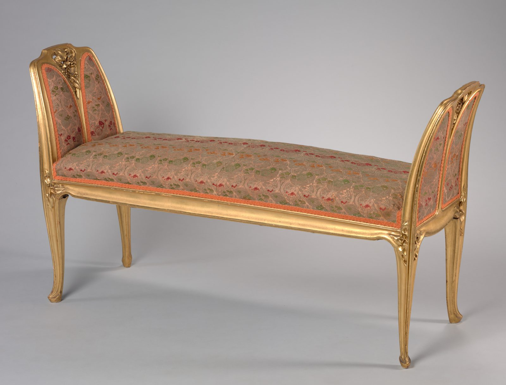

References / Furniture / 194
Gilt bench by Louis Majorelle
A Nancy window bench from the Majorelle firm: gilt wood that curves up into two arched, leaf-shaped ends carved with flowers.
- Source
- Cleveland Museum of Art: Bench, 1971.28
- Creator
- Louis Majorelle
- Made
- c. 1900
- Style
- Art Nouveau (agent-proposed, not yet reviewed by a person)
- Moods
- Graceful, ornate, organic
- Evidence
- Downloaded and inspected the Cleveland Museum of Art open-access image of object 1971.28 (3400 × 2587 px print file). Read the object record through the museum’s open-access API.
- Reviewed
- Rights
- Open license, stored. License: CC0-1.0. Rights policy
Context
The Cleveland Museum of Art records the bench as gilt wood, 75 × 118.1 × 40.7 cm, made in Nancy, France, c. 1900, by Louis Majorelle (1859–1926). CMA 1971.28.
The museum’s text says that French Art Nouveau furniture designers took inspiration from Rococo pieces of about 1750, that this bench shows the Majorelle firm’s version of that taste, and that it is now covered with a Japanese brocade of about 1900. CMA 1971.28.
Observed
- The frame is gilt all over. The seat rail curves gently and runs without a break into the two raised ends.
- Each end is a tall panel with an arched top, divided by a central rib into two pointed, leaf-shaped fields of upholstery.
- Carved flower heads sit at the top of each end, and small carved leaves sit where the legs meet the seat rail.
- The four legs are slender and curve outward to small scrolled feet.
- The brocade is pale pink and gold with small green and red floral sprigs, edged by a coral-orange braid that follows the curves of the panels.
Why it belongs
The arched, leaf-shaped end panels are a direct source for the style’s arched and leaf-cut panel shapes.
The upholstery is a later Japanese brocade, so its colours are not Majorelle’s choice; the frame and its carving are the evidence here.
Borrow
Give a panel an arched top and split it with one central rib into two leaf-shaped fields.
Run a contrasting edge line around a curved panel so that the curve reads clearly.
Measured
Machine-extracted by tools/image-traits.py on . Full measurement.
- Mean chroma
- 0.09
- Palette
- #a2a1a3 34%
- #b4b0b0 31%
- #bfbbbc 8%
- #97765c 6%
- #a88166 3%
- #886243 3%
- #ad8152 3%
- #9e6f47 3%

